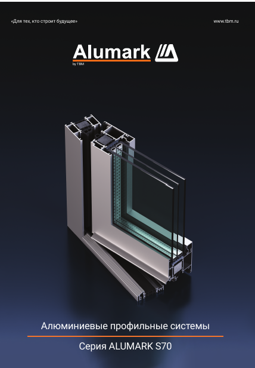
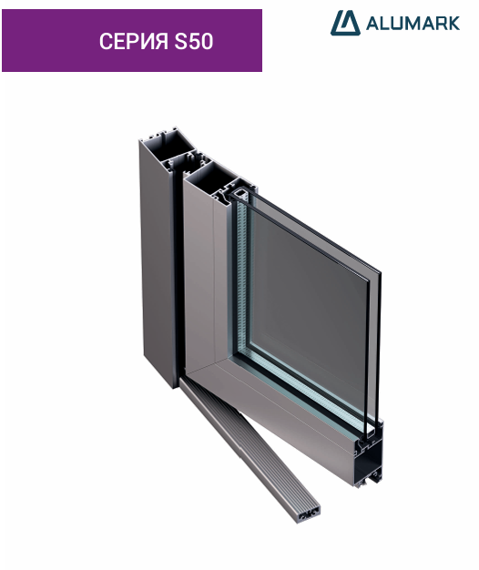
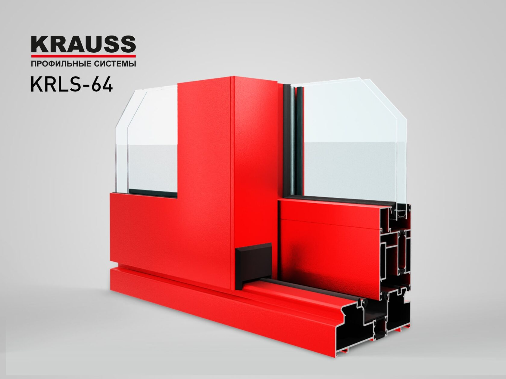
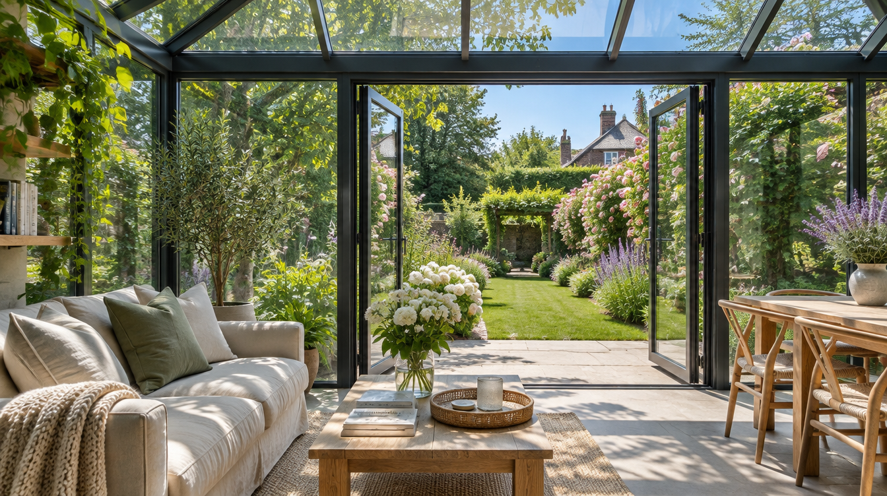

Частным заказчикам
Окна, двери и остекление зимних садов с учётом архитектуры и повседневного комфорта.
Окна, которые открывают пространство.
Алюминиевые системы для дома и бизнеса,
панорамных дверей, фасадов и зимних садов.
01 / Решения
Окна и двери, раздвижные системы, фасадные витражи и зимние сады. Проектируем и устанавливаем светопрозрачные конструкции для частных и коммерческих объектов.
Тёплые окна и двери серии Alumark S-70 и холодные конструкции серии Alumark S-50. Подберём систему с учётом назначения помещения и условий эксплуатации.

Система алюминиевых профилей с термоизолятором для изготовления витражей, окон и дверей.

Система алюминиевых профилей без термоизолятора для витражей, внутренних перегородок, окон и дверей, не требующих теплоизоляции.

Подъёмно-сдвижная серия с терморазрывом для конструкций больших размеров.
Профильная система VEKA Euroline.
Профильная система VEKA Softline.
Профильная система VEKA Softline 82.
Точные характеристики и комплектацию согласуем при проектировании.
Изображения иллюстрируют архитектурные решения.

02 / Наш подход
За лёгкими линиями окна стоят точные решения. Важно всё: от выбора системы до примыкания рамы к стене.
Учитываем размеры проёмов, назначение помещения и архитектуру. Индивидуально подходим к каждому заказчику и объекту.
Подбираем комплектацию под задачу и предлагаем конкурентные цены. Все условия обсуждаем до начала работ.
Полное сопровождение проекта и техническое обслуживание светопрозрачных конструкций в течение 36 месяцев.
Для кого мы работаем
Индивидуальное решение для каждого заказчика и объекта. Конкурентные цены, полное сопровождение и техническое обслуживание в течение 36 месяцев.
Окна, двери и остекление зимних садов с учётом архитектуры и повседневного комфорта.
Окна, входные двери и светопрозрачные фасадные конструкции для офисных объектов.
Панорамные раздвижные двери и витражи, которые связывают интерьер с окружающим пространством.
Фасадное остекление и входные конструкции под задачи коммерческого объекта.
Техническое обслуживание
и полное сопровождение проекта
Радиус работы от Москвы
Москва и Московская область
03 / Как работаем
Наши услуги — проектирование и установка самих светопрозрачных конструкций. Пройдём каждый этап вместе.
Расскажите, что хотите изменить. Обсудим дом, ваши идеи и подходящие варианты остекления.
Разговор о главномСогласуем замер. Определим размеры, конфигурацию, материалы и особенности установки.
От идеи к решениюФиксируем выбранные системы, конфигурацию, стоимость, сроки и объём установки светопрозрачных конструкций.
Прозрачные условияУстанавливаем конструкции и проверяем их работу. Далее обеспечиваем техническое обслуживание в течение 36 месяцев.
Обслуживание — 36 месяцевЗнатные окна. Знатное качество.
Фото и видео выполненных объектов
Наши работы
Фотографии и видео объектов из портфолио компании.
Идеи остекления
Иллюстрации возможных решений. Откройте фотографию, чтобы рассмотреть детали.
05 / Давайте знакомиться
Частный дом, офис, ресторан или торговый центр.
Обсудим задачу и подберём подходящие системы.